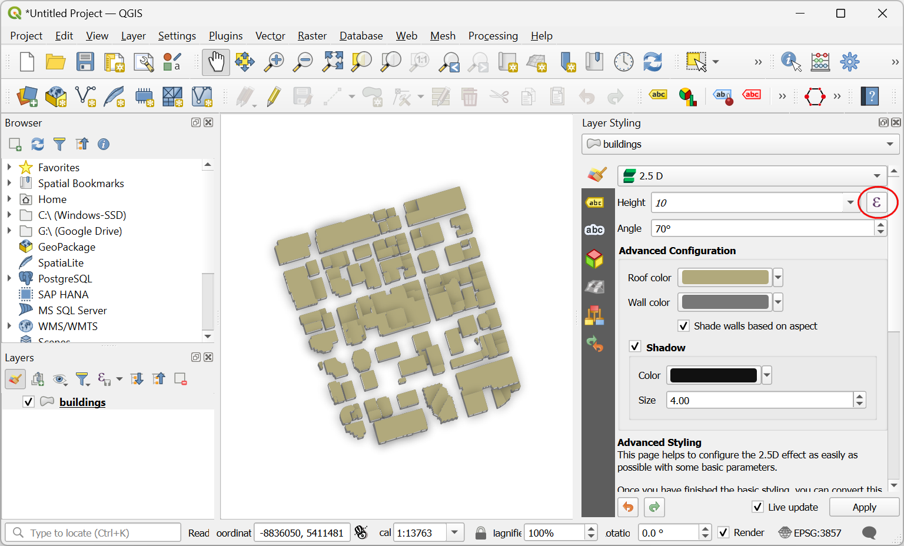
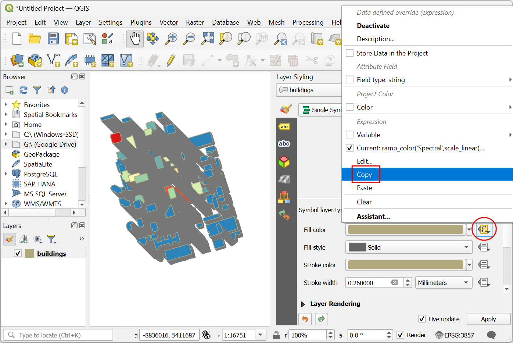
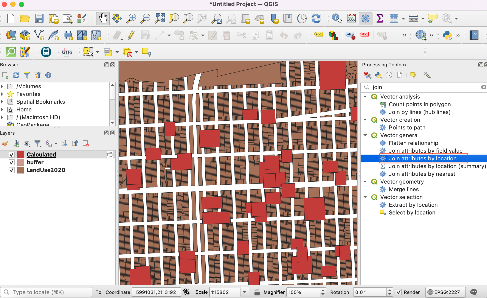

تعیین مناطق بافر کاربری اراضی (QGIS3)¶
در این آموزش شما با داده های کاربری زمین برای یک شهر کار می کنید و مناطق حائل اطراف یک قطعه زمین خاص را تعیین می کنید. چنین تحلیلی برای ایجاد راهرویی از محدودیت ها در اطراف آلودگی صوتی یا ترافیک سنگین مورد نیاز است.
بررسی اجمالی کار¶
ما با یک شکل فایل از قطعات زمین برای شهر سانفرانسیسکو شروع می کنیم و از تکنیک های پردازش جغرافیایی و تجزیه و تحلیل فضایی برای تعیین یک حائل از منطقه محدود در اطراف همه املاک با کاربری اراضی سازمانی استفاده می کنیم.
مهارت های دیگری که یاد خواهید گرفت¶
ایجاد بافرهای مستطیلی در QGIS
استفاده از یک شاخص فضایی برای تسریع در تجزیه و تحلیل
داده ها را دریافت کنید¶
داده ها از شهر سانفرانسیسکو به شکل چند ضلعی های بسته با ویژگی نشان دهنده دسته های کاربری زمین است. می توانید داده های آموزش را از DataSF Open Data Portal بیابید.
بیایید مراحل دانلود شکل فایل چند ضلعی با دستهبندی کاربری زمین برای هر بسته در سانفرانسیسکو را ببینیم.
به پورتال داده بروید - https://datasf.org/opendata/. کلمه کلیدی "کاربری زمین" را در نوار جستجو جستجو کنید.

روی اولین نتیجه جستجو کلیک کنید تا داده ها را تجسم و صادر کنید.

داده ها و ویژگی ها را خواهید دید. برای دانلود داده های «استفاده از زمین 2020» روی :guilabel:'Export' کلیک کنید.

در گزینه های صادرات، روی :guilabel:`Shapfile کلیک کنید تا شکل فایل چند ضلعی داده ها را دانلود کنید.

یک فایل فشرده از کاربری زمین دانلود خواهد شد. به برگه درباره بروید تا اطلاعات مربوط به دسته ها و واحدهای کاربری زمین را بخوانید که بیشتر در این آموزش مفید خواهد بود.

برای راحتی، می توانید مستقیماً یک کپی از شکل فایل زیر را دانلود کنید:
روش¶
QGIS را باز کنید. برای افزودن لایه، روی نماد :menuselection: «Open Data Source Manager» کلیک کنید.

به برگه :gui label:'Vector' بروید و به shapefile استفاده از زمین بروید. روی :gui label:'Add' کلیک کنید.

به نام CRS در گوشه سمت راست پایین QGIS توجه کنید. این نشان می دهد که داده ها در سیستم مختصات جغرافیایی "OGC:CRS84" است. روی آن کلیک کنید.
گفتگوی سیستم مرجع مختصات پروژه (CRS) نشان می دهد که CRS انتخاب شده "WGS 84 (CRS 84)" است. واحد اندازه گیری برای این CRS "درجه" است. تمامی پردازش های جغرافیایی در این لایه در واحدهای بومی CRS انجام خواهد شد. درجه واحد برای این تحلیل نامناسب است.

ما لایه را به CRS پیش بینی شده مناسب برای منطقه -
NAD83 / منطقه 3 کالیفرنیا (ftUS)دوباره اجرا می کنیم. این "EPSG:2227" است که از داده NAD83 با واحدهای اندازه گیری در فوت استفاده می کند. به :menuselection:`Vector --> Data Management Tools --> Reproject Layer بروید.
در گفتگوی Reproject Layer، لایه بارگذاری شده را به صورت Input Layer انتخاب کنید. روی نماد کنار انتخابگر کلیک کنید تا :guilabel:'Target CRS' را انتخاب کنید.

«EPSG:2227» را در نوار جستجو کنید و «NAD83 / California zone 3 (ftUS)» را انتخاب کنید. برای ادامه روی :guilabel:'Go back' کلیک کنید.

خروجی Reprojected را ذخیره کنید. گزینه های مرور را باز کنید و Save to File را انتخاب کنید.

شکل فایل خروجی را در پوشه انتخابی خود به عنوان "LandUse2020.shp" ذخیره کنید. گزینه باز کردن فایل خروجی پس از اجرای الگوریتم را بررسی کنید تا لایه بازپروژه شده را به QGIS اضافه کنید.

لایه اصلی را با CRS WGS 84 از QGIS حذف کنید. لایه را انتخاب کنید و روی نماد :guilabel:`Remove Layer کلیک کنید.
ما روند را با لایه reprojected ادامه خواهیم داد. همانطور که در قسمت About شکل فایل دانلود شده در پورتال داده دیدیم، طبقه بندی به شرح زیر است.
CIE = فرهنگی، نهادی، آموزشی
MED = پزشکی
MIPS = دفتر (مدیریت، اطلاعات، خدمات حرفه ای)
مختلط = کاربردهای مختلط (بدون مسکونی)
MIXRES = کاربردهای مختلط (با مسکونی)
PDR = صنعتی (تولید، توزیع، تعمیر)
** خرده فروشی/ENT ** = خرده فروشی، سرگرمی
رزیدنت = مسکونی
VISITOR = هتل ها، خدمات بازدیدکنندگان
** خالی ** = خالی
ROW = حق راه
OPENSPACE = فضای باز
برای این آموزش، ما فقط به کاربری اراضی سازمانی علاقه مند هستیم. بنابراین میتوانیم مقدار CIE را در جدول ویژگی جستجو کنیم. به بروید.

ابزار :guilabel:'Select by Attribute' را از جعبه ابزار پردازش جستجو کنید. برای باز کردن آن دوبار کلیک کنید.

در گفتگوی Select by Attribute، "LandUse2020" را به عنوان :guilabel:"لایه ورودی" تنظیم کنید. "مورد استفاده" را به عنوان :guilabel:"ویژگی انتخاب" انتخاب کنید و "CIE" را به عنوان :guilabel:"Value" وارد کنید. روی Run کلیک کنید.

در گفتگوی Select by Attribute، "LandUse2020" را به عنوان :guilabel:"لایه ورودی" تنظیم کنید. "مورد استفاده" را به عنوان :guilabel:"ویژگی انتخاب" انتخاب کنید و "CIE" را به عنوان :guilabel:"Value" وارد کنید. روی اجرا کلیک کنید.

اکنون می توانیم یک بافر در اطراف بسته های انتخاب شده ایجاد کنیم. در پنجره اصلی QGIS، جعبه ابزار پردازش را باز کنید. ابزار Buffer را جستجو و پیدا کنید. برای باز کردن آن دوبار کلیک کنید.

در گفتگوی بافر، LandUse2020 را به عنوان :guilabel:` لایه ورودی` انتخاب کنید. کادر :guilabel:«فقط ویژگیهای انتخابشده» را علامت بزنید تا بافر فقط برای قطعههای کاربری سازمانی انتخابشده اعمال شود. ما یک منطقه بافر 100 فوتی در اطراف هر بسته ایجاد خواهیم کرد. 100 فوت را به عنوان :guilabel:'Distance' وارد کنید. بافرهای پیش فرض دایره ای شکل هستند. از آنجایی که ما با داده های بسته سروکار داریم، یک ناحیه بافر مستطیلی مناسب تر است که در آن هر لبه بسته با فاصله بافر جبران شود. "Square" را به عنوان :guilabel:"End cap style" و "Miter" را به عنوان :guilabel:"Join style" انتخاب کنید. روی دکمه browse در کنار Buffered کلیک کنید و :guilabel:`Save to File را انتخاب کنید.

نام فایل خروجی را به صورت
buffer.shpوارد کنید و روی OK کلیک کنید. روی Run کلیک کنید.

پس از اتمام پردازش، یک لایه بافر جدید به QGIS اضافه می شود. این چند ضلعی ها منطقه حایل محدودیت ها در اطراف کاربری اراضی سازمانی را نشان می دهند

اکنون می دانیم که کدام مناطق شهر تحت منطقه ممنوعه قرار می گیرند. شناسایی تمام بسته هایی که در این منطقه قرار می گیرند و یک ویژگی که نشان می دهد محدودیتی برای آن بسته اعمال می شود اضافه کنید مفید خواهد بود. ابتدا یک ستون به چند ضلعی های بافر اضافه می کنیم. عبارت :menuselection:'Field Calculator' را در جعبه ابزار پردازش جستجو کنید. برای باز کردن دوبار کلیک کنید.

در گفتگوی Field Calculator، مطمئن شوید که بافر به عنوان :guilabel:` لایه ورودی` انتخاب شده است. ما نیازی به ذخیره این لایه نداریم، بنابراین قسمت فایل Output را خالی بگذارید. "RESTRICTED" را در نتیجه وارد کنید:guilabel:"Field Name". :guilabel: نوع فیلد نتیجه را روی
Stringتنظیم کنید. "Yes" را به عنوان :guilabel:"Expression" تایپ کنید. روی Run کلیک کنید.

یک لایه جدید به نام Calculated به QGIS اضافه خواهد شد. جدول ویژگی ها را باز کنید و بررسی کنید که ستون جدیدی به نام RESTRICTED با مقدار Yes در این لایه وجود دارد.

22. Next step is to do a Spatial Join to add this attribute to the original parcels layer based on which parcels intersect with the buffer zone. The LandUse2020 layer has more than 100,000 elements. We will add spatial indexing to the features to improve the performance and speedup the spatial join operation.
Check out the course Spatial Indexing section to understand more about this.
Now, search and locate the tool from the Processing Toolbox and double-click to open.

"LandUse2020" را به عنوان :guilabel:"لایه ورودی" انتخاب کنید و روی :guilabel:"Run" کلیک کنید.

شاخص فضایی برای لایه ایجاد می شود. با بررسی ویژگی لایه می توانید این موضوع را تأیید کنید. روی لایه کلیک راست کرده و روی Properties کلیک کنید.

به تب Source بروید و زیر بخش :guilabel:`Geometry را نگاه کنید. این نشان می دهد که شاخص فضایی وجود دارد.

اکنون می توانیم اتصال فضایی را انجام دهیم. در جعبه ابزار پردازش به دنبال ابزار :menuselection:`پیوستن ویژگیها بر اساس مکان باشید. برای باز کردن آن دوبار کلیک کنید.

ما می خواهیم به ویژگی های لایه``LandUse2020` بپیوندیم با مقایسه با````محاسبه شده`. ما میخواهیم ویژگیهایی را که همدیگر را قطع میکنند بپیوندیم. کادر «تقاطع» را علامت بزنید. روی دکمه مرور در کنار Fields to add کلیک کنید.

فقط قسمت "RESTRICTED" را انتخاب کنید و روی :guilabel:"OK" کلیک کنید.

برای Join Type، "Take feature of the first match only" را انتخاب کنید. در مرحله بعد روی … در کنار لایه Joined کلیک کنید و Save to File را انتخاب کنید.

نام Joined layer را به عنوان "LandUseWithRestrictions.shp" وارد کنید و روی :guilabel:"OK" کلیک کنید. روی Run کلیک کنید.

پس از اتمام پردازش، یک لایه جدید "LandUseWithRestrictions" دریافت خواهید کرد. جدول ویژگی را باز کنید و ستون "محدود" را بررسی کنید. بستههایی که در فاصله ۱۰۰ فوتی یک بسته سازمانی قرار دارند، اکنون دارای مقدار «بله» هستند که نشاندهنده اعمال محدودیت برای آن بسته است. بسته های دیگر دارای مقدار «NULL» هستند که نشان دهنده عدم محدودیت است.

If you want to give feedback or share your experience with this tutorial, please comment below. (requires GitHub account)